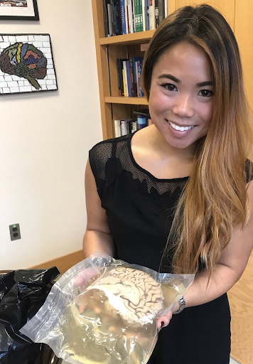
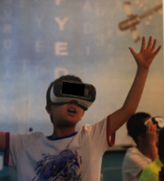

-
My mission statement is to design educational materials and interventions to meet the needs of diverse learners and optimize learning outcomes. Specifically, my research focuses on developing tools that are especially useful for children with less developed attention regulation and for low-income youth.
- How can we utilize physiological and imaging techniques such as eye-tracking and noninvasive functional near-infrared spectroscopy (fNIRS) to investigate underlying cognitive processes in learning contexts?
How can we apply learning theories in developmental and cognitive psychology to enrich the experiences children have with technology and educational media?



As the use of digital games in childhood vastly increases, research on the best design practices is needed.

As the use of digital games in childhood vastly increases, research on the best design practices is needed.
